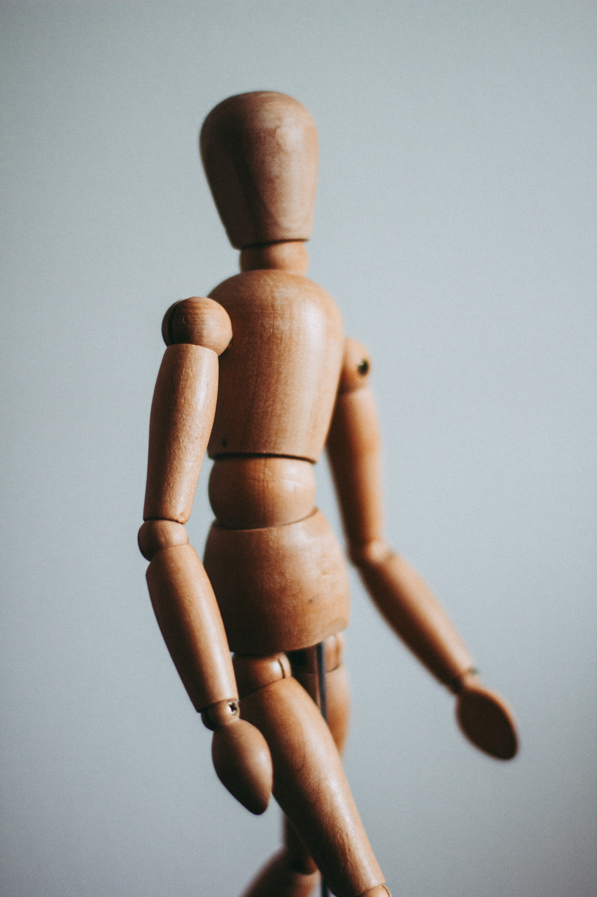

- who am I?
- my school days & college life
- I was a marine.. & my real life and goals

my school days & college life
학창시절
초중고 모두 동네에서 가까운 학교를 다녔고, 남중남고를 다니며 남자들의 무리생활에 익숙한편이다.
덕분에 사춘기시절을 솔로로 보냈고, 짝사랑만하다 좋은시절이 다 가버렸다. 실제로 여자친구있는 친구들을 부러워한 편이다.
학창시절은 운동을 빼놓을 수 없었고, 당시에 농구부 생활을 하며 각종 대회에도 참가하며 지냈다. 성적은 좋지못했다.
태생부터 빼빼마른 몸을 바꾸려고 많이 노력했지만, 근육질몸을 얻을 순 없었다. 대학시절
남자임에도 간호학과를 간 이유
큰 누나의 영향을 가장 많이 받았다. 중국에서 유학하던 큰누나는 한의대생이였고,남자간호사의 장점과 미래에대해 확신하여 나에게 적극 추천하였다. 나는 그당시에 체대를 가고싶었지만, 부모님의 반대에 부딪혀
쉽게 진로를 정하지 못하고 있었던 차에 공부해서 점수나오면 가려 마음먹은 터였다. 직업적 사명감보단 취업이 잘된다는 이유가 컸다.
의료인은 숭고한 직업이라고 생각하던 때였지만, 입학하고 보니 대부분이 취업잘되서 온 사람들이였다.
학과생활과 학점
고등학교때까지 부모님과 함께 지내다 타지역으로 가서 처음 살고 느낀 자유를 만끽하느라 바빳다.
간호학과는 학교내에서도 선후배기강이 강한 과였다. 여자들이 많은 과라 그런지 언니,동생하며 지들끼리 서열잡는게 당시 분위기였고,
나도 눈치껏 행동했다. 악습중에는 1학년으로만 구성되어 학교앞 술집을 가면 안된다느니, 1학년은 엘베이용금지, 과잠착용금지 등
별 시덥잖은 똥군기가 많았고, 내가 군대갔다와서 복학하고는 다행히 많이 사라졌다.
동기들과 밤새 떠들고 노는걸 좋아하니 수업과 학점은 뒷전이였다. 겨우겨우 사람구실할정도로 공부하여 학점을 받았다.
복학하고와서도 정신은 차렸지만 노는건 포기할 수 없었다.. 다행히도 그땐 놀면서 공부하는게 가능하다는 것을 알아채
학점도 1학년에 비해 준수했다.(별차이는 없다...)
다음페이지(2/3)